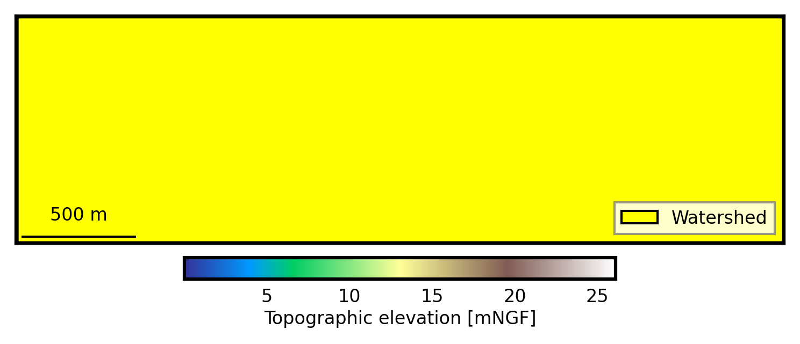
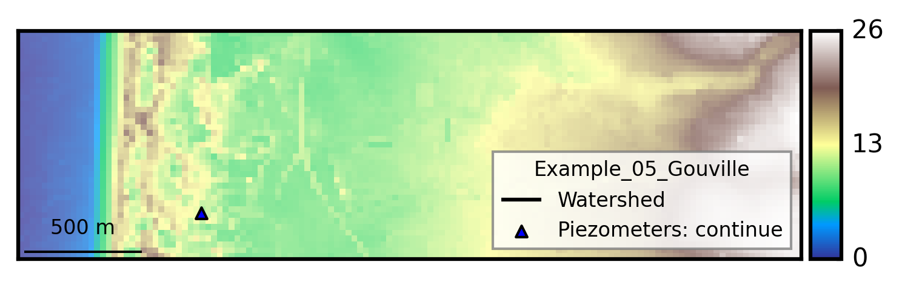
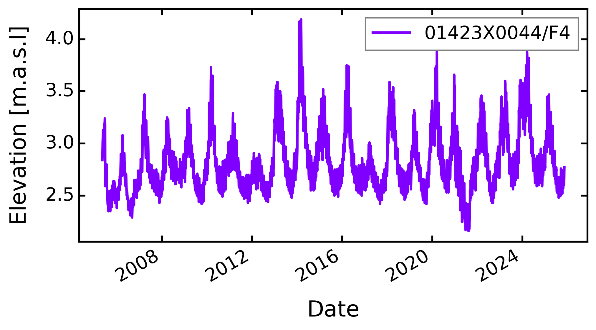
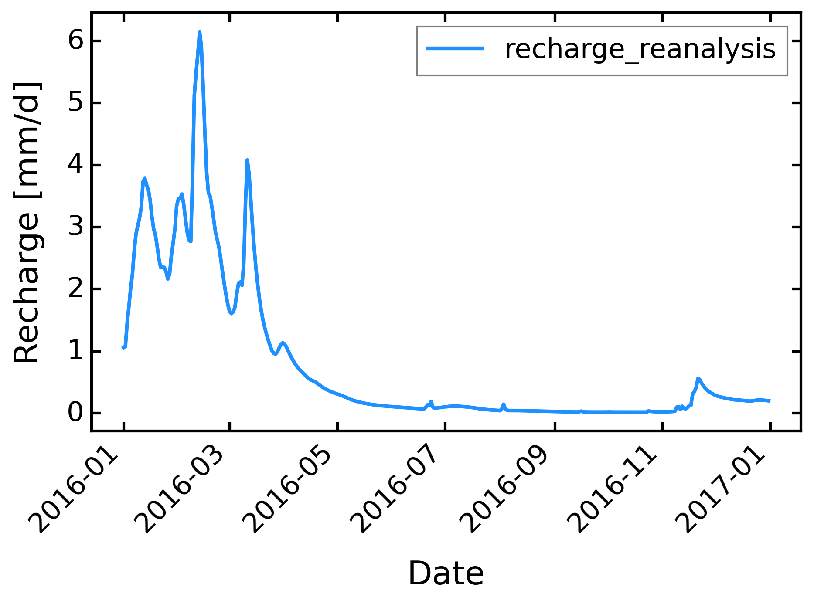
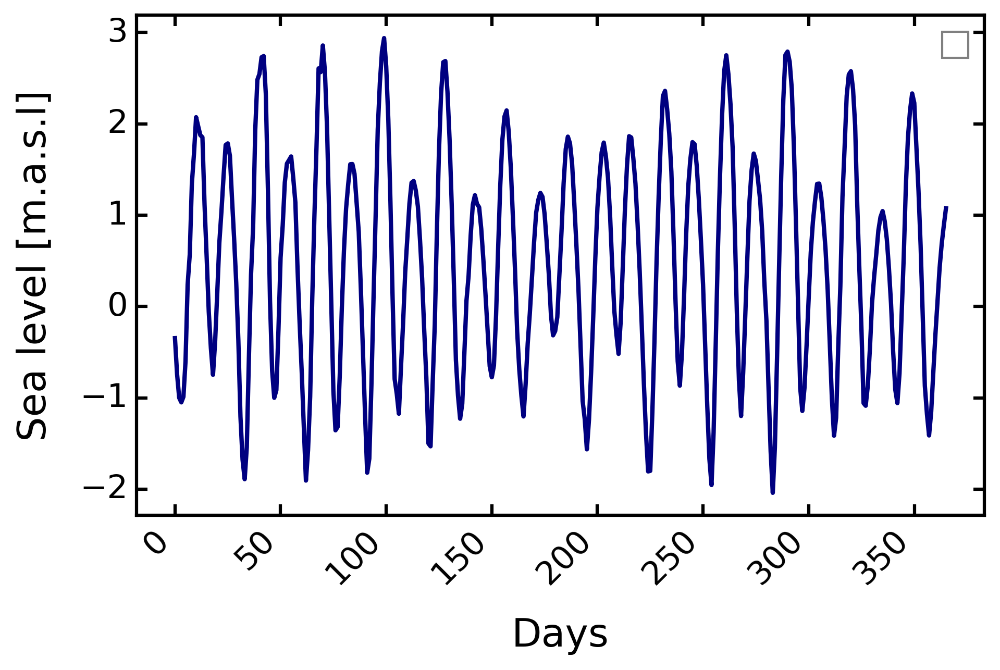
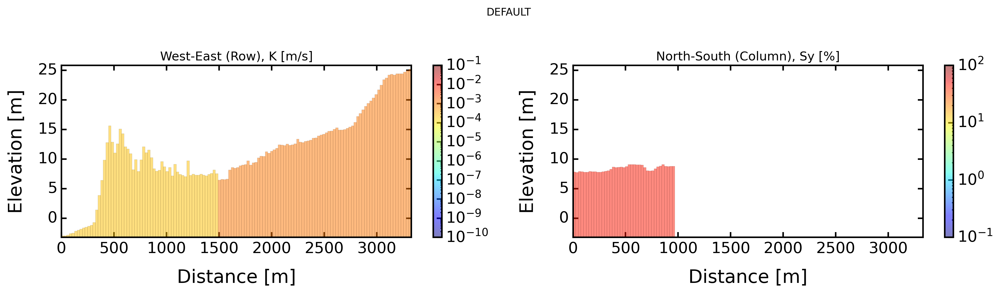
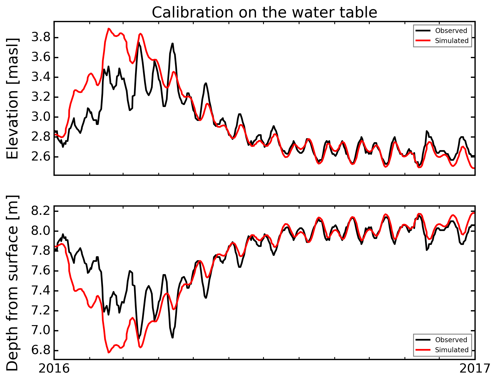
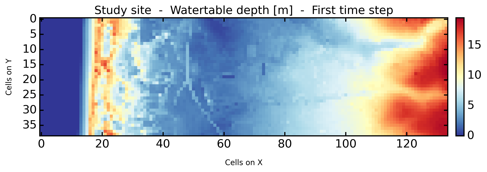

Piezometry In A Heterogeneous Coastal Aquifer#
[2]:
# -*- coding: utf-8 -*-
"""
* Copyright (c) 2023 Alexandre Gauvain, Ronan Abhervé, Jean-Raynald de Dreuzy
*
* This program and the accompanying materials are made available under the
* terms of the Eclipse Public License 2.0 which is available at
* http://www.eclipse.org/legal/epl-2.0, or the Apache License, Version 2.0
* which is available at https://www.apache.org/licenses/LICENSE-2.0.
*
* SPDX-License-Identifier: EPL-2.0 OR Apache-2.0
"""
[2]:
'\n * Copyright (c) 2023 Alexandre Gauvain, Ronan Abhervé, Jean-Raynald de Dreuzy\n *\n * This program and the accompanying materials are made available under the\n * terms of the Eclipse Public License 2.0 which is available at\n * http://www.eclipse.org/legal/epl-2.0, or the Apache License, Version 2.0\n * which is available at https://www.apache.org/licenses/LICENSE-2.0.\n *\n * SPDX-License-Identifier: EPL-2.0 OR Apache-2.0\n'
[3]:
# Libraries installed by default
import sys
import os
import numpy as np
import pandas as pd
import matplotlib.pyplot as plt
import matplotlib.dates as mdates
from mpl_toolkits.axes_grid1 import make_axes_locatable
# Libraries added from 'conda forge' procedure
import whitebox
wbt = whitebox.WhiteboxTools()
wbt.verbose = False
# ROOT DIRECTORY
from os.path import dirname, abspath
try:
root_dir = '/home/bb/Documents/01_Git_Repository/01-HydroModPy-dev'
except NameError:
root_dir = os.getcwd()
sys.path.append(root_dir)
# HYDROMODPY MODULES
from hydromodpy import watershed_root
from hydromodpy.display import visualization_watershed, visualization_results
from hydromodpy.tools import toolbox
fontprop = toolbox.plot_params(8,15,18,20) # small, medium, interm, large
[4]:
example_path = os.path.join(root_dir, "examples", "05_piezometry_in_a_heterogeneous_coastal_aquifer/")
data_path = os.path.join(example_path, "data/")
# The folder out_path is created in the example_path root directory:
out_path = os.path.join(root_dir,'examples', 'results')
# Or define it manually
# out_path = 'C:/Simulations/HydroModPy/'
print('The results of the example will be saved here :', out_path)
The results of the example will be saved here : /home/bb/Documents/01_Git_Repository/01-HydroModPy-dev/examples/results
[5]:
dem_path = data_path + "MNT_gouville_25m.tif"
watershed_name = 'Example_05_Gouville'
from_lib = None # os.path.join(root_dir,'watershed_library.csv')
from_dem = None # [path, cell size]
from_shp = [data_path + 'model_area.shp', 10] # [path, buffer size]
from_xyv = None # [x, y, snap distance, buffer size]
bottom_path = None # path
modflow_path = os.path.join(root_dir,'bin/')
save_object = True
[6]:
print('##### '+watershed_name.upper()+' #####')
load = True
BV = watershed_root.Watershed(dem_path=dem_path,
out_path=out_path,
load=load,
watershed_name=watershed_name,
from_lib=from_lib, # os.path.join(root_dir,'watershed_library.csv')
from_dem=from_dem, # [path, cell size]
from_shp=from_shp, # [path, buffer size]
from_xyv=from_xyv, # [x, y, snap distance, buffer size]
bottom_path=bottom_path, # path
save_object=save_object)
# Paths generated automatically but necessary for plots
stable_folder = out_path+'/'+watershed_name+'/'+'results_stable/'
simulations_folder = out_path+'/'+watershed_name+'/'+'results_simulations/'
[INFO] __ __ __ __ ____ ________
[INFO] / / / / / / / \/ / / / __ /
[INFO] / /_/ /_ ______/ /________ / /___ ____/ / /_/ /_ __
[INFO] / __ / / / / __ / ___/ __ \/ /\,-/ / __ \/ __ / ____/ / / /
[INFO] / / / / /_/ / /_/ / / / /_/ / / / / /_/ / /_/ / / / /_/ /
[INFO] /_/ /_/\__, /_____/_/ \____/_/ /_/\____/_____/_/____\__, /
[INFO] /____/ Hydrological Modelling in Python /_____________/
[INFO]
[INFO] Python object was successfully loaded as requested; imported from output directory /home/bb/Documents/01_Git_Repository/01-HydroModPy-dev/examples/results/Example_05_Gouville
##### EXAMPLE_05_GOUVILLE #####
[7]:
visualization_watershed.watershed_local(dem_path, BV)
# Clip specific data at the catchment scale
oceanic_path = data_path
BV.add_oceanic(oceanic_path) # import specific data of tide temporal dynamcis
BV.add_piezometry() # download data on the web
# General plot of the study site
visualization_watershed.watershed_dem(BV)
[INFO] Extracting piezometry dataset for watershed


[8]:
code = '01423X0044/F4' #BSS piezometer code
file = os.path.join(data_path, 'piezo.txt')
df = pd.read_csv(file, delimiter = '|',header=0, engine='python', encoding='latin1')
piezo_NGF_df = df[['Date de la mesure','Côte NGF']]
piezo_NGF_df.columns = ['Date', 'NGF']
piezo_2016 = piezo_NGF_df.copy()
piezo_NGF_df.index = piezo_NGF_df['Date']
piezo_NGF_df = piezo_NGF_df.drop(['Date'], axis=1)
piezo_NGF_df.columns = [code]
piezo_2016.index = pd.to_datetime(piezo_2016['Date'],format='%d/%m/%Y %H:%M:%S')
piezo_2016 = piezo_2016.drop(['Date'], axis=1)
piezo_2016 = piezo_2016[piezo_2016.index.year == 2016]
filename = 'piezometry_' + str.replace(code, '/', '') + '_363782_6897114_9.2_10' + '.csv' #check if needed
piezo_add_path = os.path.join(stable_folder, 'add_data', filename)
if not os.path.exists(os.path.join(stable_folder, 'add_data')):
os.mkdir(os.path.join(stable_folder, 'add_data'))
piezo_NGF_df.to_csv(piezo_add_path, sep = ';',)
# BV.piezometry.add_data()
BV.piezometry.display_data()

[9]:
first_clim = 'mean'
freq_time = 'D'
BV.add_climatic()
BV.climatic.update_first_clim(first_clim)
BV.climatic.update_recharge_reanalysis(path_file = data_path + '_REC_D.csv',
clim_mod='REA',
clim_sce='historic',
first_year=2016,
last_year=2016,
time_step=freq_time,
sim_state='transient')
BV.climatic.update_first_clim(first_clim)
rec = BV.climatic.recharge
fig, ax = plt.subplots(1,1, figsize=(7,4))
ax.plot(rec, label='recharge_reanalysis', c='dodgerblue', lw=2)
ax.set_xlabel('Date')
ax.set_ylabel('Recharge [mm/d]')
plt.xticks(rotation=45, ha="right")
ax.legend()
BV.climatic.update_recharge(rec/1000, sim_state='transient')
[INFO] Initializing climatic module parameters

[10]:
sea_lev = pd.read_csv(data_path + 'sea_level.csv', header=None)
sea_level = sea_lev[1].values.tolist()
BV.oceanic.update_MSL(sea_level)
sl = BV.oceanic.MSL
fig, ax = plt.subplots(1,1, figsize=(7,4))
ax.plot(sl, c='navy', lw=2)
ax.set_xlabel('Days')
ax.set_ylabel('Sea level [m.a.s.l]')
plt.xticks(rotation=45, ha="right")
ax.legend()
# Since initial state of transient-state simulation is obtained
# using a permanent-state simulation based on t0 values,
# sea level at t0 is set to its mean value.
sea_level[0] = np.mean(sea_level)
BV.oceanic.update_MSL(sea_level)

[11]:
# Frame settings
model_name = 'default'
box = False # or True
sink_fill = False # or True
sim_state = 'transient' # 'steady' or 'transient'
plot_cross = True
dis_perlen = False
# Hydraulic settings
nlay = 1
lay_decay = 1 # 1 for no decay
bottom = -20 # elevation in meters, None for constant aquifer thickness, or 2D matrix
thick = None # if bottom is None, aquifer thickness
cond_drain = None # or value of conductance
# Lateral heterogeneity of hydrodynamic parameters
hk_1 = 18.5 # m/day
hk_2 = 95 # m/day
sy_1 = 8 / 100 # -
sy_2 = 45 / 100 # -
# Boundary settings
bc_left = None # or value
bc_right = None # or value
[12]:
# Import modules
BV.add_settings()
BV.add_hydraulic()
# Frame settings
BV.settings.update_model_name(model_name)
BV.settings.update_box_model(box)
BV.settings.update_sink_fill(sink_fill)
BV.settings.update_simulation_state(sim_state)
BV.settings.update_check_model(plot_cross=plot_cross)
# Hydraulic settings
BV.hydraulic.update_nlay(nlay) # 1
BV.hydraulic.update_lay_decay(lay_decay) # 1
BV.hydraulic.update_bottom(bottom) # None
BV.hydraulic.update_thick(thick) # 30 / intervient pas si bottom != None
BV.hydraulic.update_cond_drain(cond_drain)
BV.settings.update_dis_perlen(dis_perlen=dis_perlen)
# Lateral heterogeneity
shape_calib_zones_path = os.path.join(data_path, 'param_zones.shp')
BV.hydraulic.update_calib_zones_from_shp(shape_calib_zones_path)
calib_zones = BV.hydraulic.calib_zones
BV.hydraulic.update_hk_from_calib_zones(1, hk_1)
BV.hydraulic.update_hk_from_calib_zones(2, hk_2)
BV.hydraulic.update_sy_from_calib_zones(1, sy_1)
BV.hydraulic.update_sy_from_calib_zones(2, sy_2)
# Boundary settings
BV.settings.update_bc_sides(bc_left, bc_right)
[INFO] Initializing settings module for groundwater parameters
[INFO] Initializing hydraulic module for parameter setup
[ ]:
# BV.climatic.update_first_clim('first')
model_modflow = BV.preprocessing_modflow(for_calib=False)
success_modflow = BV.processing_modflow(model_modflow, write_model=True, run_model=True)
if success_modflow == True:
BV.postprocessing_modflow(model_modflow,
watertable_elevation = True,
watertable_depth= True,
seepage_areas = True,
outflow_drain = True,
groundwater_flux = True,
groundwater_storage = True,
accumulation_flux = False,
persistency_index=False,
intermittency_monthly=False,
intermittency_daily=False,
export_all_tif = False)
timeseries_results = BV.postprocessing_timeseries(model_modflow=model_modflow,
model_modpath=None,
datetime_format=True,
subbasin_results=False)
netcdf_results = BV.postprocessing_netcdf(model_modflow,
datetime_format=True)
[INFO] MODFLOW grid connectivity check passed
FloPy is using the following executable to run the model: ../../../../../bin/linux/mfnwt
MODFLOW-NWT-SWR1
U.S. GEOLOGICAL SURVEY MODULAR FINITE-DIFFERENCE GROUNDWATER-FLOW MODEL
WITH NEWTON FORMULATION
Version 1.3.0 07/01/2022
BASED ON MODFLOW-2005 Version 1.12.0 02/03/2017
SWR1 Version 1.05.0 03/10/2022
Using NAME file: default.nam
Run start date and time (yyyy/mm/dd hh:mm:ss): 2025/11/12 1:48:47
Solving: Stress period: 1 Time step: 1 Groundwater-Flow Eqn.
Solving: Stress period: 2 Time step: 1 Groundwater-Flow Eqn.
Solving: Stress period: 3 Time step: 1 Groundwater-Flow Eqn.
Solving: Stress period: 4 Time step: 1 Groundwater-Flow Eqn.
Solving: Stress period: 5 Time step: 1 Groundwater-Flow Eqn.
Solving: Stress period: 6 Time step: 1 Groundwater-Flow Eqn.
Solving: Stress period: 7 Time step: 1 Groundwater-Flow Eqn.
Solving: Stress period: 8 Time step: 1 Groundwater-Flow Eqn.
Solving: Stress period: 9 Time step: 1 Groundwater-Flow Eqn.
Solving: Stress period: 10 Time step: 1 Groundwater-Flow Eqn.
Solving: Stress period: 11 Time step: 1 Groundwater-Flow Eqn.
Solving: Stress period: 12 Time step: 1 Groundwater-Flow Eqn.
Solving: Stress period: 13 Time step: 1 Groundwater-Flow Eqn.
Solving: Stress period: 14 Time step: 1 Groundwater-Flow Eqn.
Solving: Stress period: 15 Time step: 1 Groundwater-Flow Eqn.
Solving: Stress period: 16 Time step: 1 Groundwater-Flow Eqn.
Solving: Stress period: 17 Time step: 1 Groundwater-Flow Eqn.
Solving: Stress period: 18 Time step: 1 Groundwater-Flow Eqn.
Solving: Stress period: 19 Time step: 1 Groundwater-Flow Eqn.
Solving: Stress period: 20 Time step: 1 Groundwater-Flow Eqn.
Solving: Stress period: 21 Time step: 1 Groundwater-Flow Eqn.
Solving: Stress period: 22 Time step: 1 Groundwater-Flow Eqn.
Solving: Stress period: 23 Time step: 1 Groundwater-Flow Eqn.
Solving: Stress period: 24 Time step: 1 Groundwater-Flow Eqn.
Solving: Stress period: 25 Time step: 1 Groundwater-Flow Eqn.
Solving: Stress period: 26 Time step: 1 Groundwater-Flow Eqn.
Solving: Stress period: 27 Time step: 1 Groundwater-Flow Eqn.
Solving: Stress period: 28 Time step: 1 Groundwater-Flow Eqn.
Solving: Stress period: 29 Time step: 1 Groundwater-Flow Eqn.
Solving: Stress period: 30 Time step: 1 Groundwater-Flow Eqn.
Solving: Stress period: 31 Time step: 1 Groundwater-Flow Eqn.
Solving: Stress period: 32 Time step: 1 Groundwater-Flow Eqn.
Solving: Stress period: 33 Time step: 1 Groundwater-Flow Eqn.
Solving: Stress period: 34 Time step: 1 Groundwater-Flow Eqn.
Solving: Stress period: 35 Time step: 1 Groundwater-Flow Eqn.
Solving: Stress period: 36 Time step: 1 Groundwater-Flow Eqn.
Solving: Stress period: 37 Time step: 1 Groundwater-Flow Eqn.
Solving: Stress period: 38 Time step: 1 Groundwater-Flow Eqn.
Solving: Stress period: 39 Time step: 1 Groundwater-Flow Eqn.
Solving: Stress period: 40 Time step: 1 Groundwater-Flow Eqn.
Solving: Stress period: 41 Time step: 1 Groundwater-Flow Eqn.
Solving: Stress period: 42 Time step: 1 Groundwater-Flow Eqn.
Solving: Stress period: 43 Time step: 1 Groundwater-Flow Eqn.
Solving: Stress period: 44 Time step: 1 Groundwater-Flow Eqn.
Solving: Stress period: 45 Time step: 1 Groundwater-Flow Eqn.
Solving: Stress period: 46 Time step: 1 Groundwater-Flow Eqn.
Solving: Stress period: 47 Time step: 1 Groundwater-Flow Eqn.
Solving: Stress period: 48 Time step: 1 Groundwater-Flow Eqn.
Solving: Stress period: 49 Time step: 1 Groundwater-Flow Eqn.
Solving: Stress period: 50 Time step: 1 Groundwater-Flow Eqn.
Solving: Stress period: 51 Time step: 1 Groundwater-Flow Eqn.
Solving: Stress period: 52 Time step: 1 Groundwater-Flow Eqn.
Solving: Stress period: 53 Time step: 1 Groundwater-Flow Eqn.
Solving: Stress period: 54 Time step: 1 Groundwater-Flow Eqn.
Solving: Stress period: 55 Time step: 1 Groundwater-Flow Eqn.
Solving: Stress period: 56 Time step: 1 Groundwater-Flow Eqn.
Solving: Stress period: 57 Time step: 1 Groundwater-Flow Eqn.
Solving: Stress period: 58 Time step: 1 Groundwater-Flow Eqn.
Solving: Stress period: 59 Time step: 1 Groundwater-Flow Eqn.
Solving: Stress period: 60 Time step: 1 Groundwater-Flow Eqn.
Solving: Stress period: 61 Time step: 1 Groundwater-Flow Eqn.
Solving: Stress period: 62 Time step: 1 Groundwater-Flow Eqn.
Solving: Stress period: 63 Time step: 1 Groundwater-Flow Eqn.
Solving: Stress period: 64 Time step: 1 Groundwater-Flow Eqn.
Solving: Stress period: 65 Time step: 1 Groundwater-Flow Eqn.
Solving: Stress period: 66 Time step: 1 Groundwater-Flow Eqn.
Solving: Stress period: 67 Time step: 1 Groundwater-Flow Eqn.
Solving: Stress period: 68 Time step: 1 Groundwater-Flow Eqn.
Solving: Stress period: 69 Time step: 1 Groundwater-Flow Eqn.
Solving: Stress period: 70 Time step: 1 Groundwater-Flow Eqn.
Solving: Stress period: 71 Time step: 1 Groundwater-Flow Eqn.
Solving: Stress period: 72 Time step: 1 Groundwater-Flow Eqn.
Solving: Stress period: 73 Time step: 1 Groundwater-Flow Eqn.
Solving: Stress period: 74 Time step: 1 Groundwater-Flow Eqn.
Solving: Stress period: 75 Time step: 1 Groundwater-Flow Eqn.
Solving: Stress period: 76 Time step: 1 Groundwater-Flow Eqn.
Solving: Stress period: 77 Time step: 1 Groundwater-Flow Eqn.
Solving: Stress period: 78 Time step: 1 Groundwater-Flow Eqn.
Solving: Stress period: 79 Time step: 1 Groundwater-Flow Eqn.
Solving: Stress period: 80 Time step: 1 Groundwater-Flow Eqn.
Solving: Stress period: 81 Time step: 1 Groundwater-Flow Eqn.
Solving: Stress period: 82 Time step: 1 Groundwater-Flow Eqn.
Solving: Stress period: 83 Time step: 1 Groundwater-Flow Eqn.
Solving: Stress period: 84 Time step: 1 Groundwater-Flow Eqn.
Solving: Stress period: 85 Time step: 1 Groundwater-Flow Eqn.
Solving: Stress period: 86 Time step: 1 Groundwater-Flow Eqn.
Solving: Stress period: 87 Time step: 1 Groundwater-Flow Eqn.
Solving: Stress period: 88 Time step: 1 Groundwater-Flow Eqn.
Solving: Stress period: 89 Time step: 1 Groundwater-Flow Eqn.
Solving: Stress period: 90 Time step: 1 Groundwater-Flow Eqn.
Solving: Stress period: 91 Time step: 1 Groundwater-Flow Eqn.
Solving: Stress period: 92 Time step: 1 Groundwater-Flow Eqn.
Solving: Stress period: 93 Time step: 1 Groundwater-Flow Eqn.
Solving: Stress period: 94 Time step: 1 Groundwater-Flow Eqn.
Solving: Stress period: 95 Time step: 1 Groundwater-Flow Eqn.
Solving: Stress period: 96 Time step: 1 Groundwater-Flow Eqn.
Solving: Stress period: 97 Time step: 1 Groundwater-Flow Eqn.
Solving: Stress period: 98 Time step: 1 Groundwater-Flow Eqn.
Solving: Stress period: 99 Time step: 1 Groundwater-Flow Eqn.
Solving: Stress period: 100 Time step: 1 Groundwater-Flow Eqn.
Solving: Stress period: 101 Time step: 1 Groundwater-Flow Eqn.
Solving: Stress period: 102 Time step: 1 Groundwater-Flow Eqn.
Solving: Stress period: 103 Time step: 1 Groundwater-Flow Eqn.
Solving: Stress period: 104 Time step: 1 Groundwater-Flow Eqn.
Solving: Stress period: 105 Time step: 1 Groundwater-Flow Eqn.
Solving: Stress period: 106 Time step: 1 Groundwater-Flow Eqn.
Solving: Stress period: 107 Time step: 1 Groundwater-Flow Eqn.
Solving: Stress period: 108 Time step: 1 Groundwater-Flow Eqn.
Solving: Stress period: 109 Time step: 1 Groundwater-Flow Eqn.
Solving: Stress period: 110 Time step: 1 Groundwater-Flow Eqn.
Solving: Stress period: 111 Time step: 1 Groundwater-Flow Eqn.
Solving: Stress period: 112 Time step: 1 Groundwater-Flow Eqn.
Solving: Stress period: 113 Time step: 1 Groundwater-Flow Eqn.
Solving: Stress period: 114 Time step: 1 Groundwater-Flow Eqn.
Solving: Stress period: 115 Time step: 1 Groundwater-Flow Eqn.
Solving: Stress period: 116 Time step: 1 Groundwater-Flow Eqn.
Solving: Stress period: 117 Time step: 1 Groundwater-Flow Eqn.
Solving: Stress period: 118 Time step: 1 Groundwater-Flow Eqn.
Solving: Stress period: 119 Time step: 1 Groundwater-Flow Eqn.
Solving: Stress period: 120 Time step: 1 Groundwater-Flow Eqn.
Solving: Stress period: 121 Time step: 1 Groundwater-Flow Eqn.
Solving: Stress period: 122 Time step: 1 Groundwater-Flow Eqn.
Solving: Stress period: 123 Time step: 1 Groundwater-Flow Eqn.
Solving: Stress period: 124 Time step: 1 Groundwater-Flow Eqn.
Solving: Stress period: 125 Time step: 1 Groundwater-Flow Eqn.
Solving: Stress period: 126 Time step: 1 Groundwater-Flow Eqn.
Solving: Stress period: 127 Time step: 1 Groundwater-Flow Eqn.
Solving: Stress period: 128 Time step: 1 Groundwater-Flow Eqn.
Solving: Stress period: 129 Time step: 1 Groundwater-Flow Eqn.
Solving: Stress period: 130 Time step: 1 Groundwater-Flow Eqn.
Solving: Stress period: 131 Time step: 1 Groundwater-Flow Eqn.
Solving: Stress period: 132 Time step: 1 Groundwater-Flow Eqn.
Solving: Stress period: 133 Time step: 1 Groundwater-Flow Eqn.
Solving: Stress period: 134 Time step: 1 Groundwater-Flow Eqn.
Solving: Stress period: 135 Time step: 1 Groundwater-Flow Eqn.
Solving: Stress period: 136 Time step: 1 Groundwater-Flow Eqn.
Solving: Stress period: 137 Time step: 1 Groundwater-Flow Eqn.
Solving: Stress period: 138 Time step: 1 Groundwater-Flow Eqn.
Solving: Stress period: 139 Time step: 1 Groundwater-Flow Eqn.
Solving: Stress period: 140 Time step: 1 Groundwater-Flow Eqn.
Solving: Stress period: 141 Time step: 1 Groundwater-Flow Eqn.
Solving: Stress period: 142 Time step: 1 Groundwater-Flow Eqn.
Solving: Stress period: 143 Time step: 1 Groundwater-Flow Eqn.
Solving: Stress period: 144 Time step: 1 Groundwater-Flow Eqn.
Solving: Stress period: 145 Time step: 1 Groundwater-Flow Eqn.
Solving: Stress period: 146 Time step: 1 Groundwater-Flow Eqn.
Solving: Stress period: 147 Time step: 1 Groundwater-Flow Eqn.
Solving: Stress period: 148 Time step: 1 Groundwater-Flow Eqn.
Solving: Stress period: 149 Time step: 1 Groundwater-Flow Eqn.
Solving: Stress period: 150 Time step: 1 Groundwater-Flow Eqn.
Solving: Stress period: 151 Time step: 1 Groundwater-Flow Eqn.
Solving: Stress period: 152 Time step: 1 Groundwater-Flow Eqn.
Solving: Stress period: 153 Time step: 1 Groundwater-Flow Eqn.
Solving: Stress period: 154 Time step: 1 Groundwater-Flow Eqn.
Solving: Stress period: 155 Time step: 1 Groundwater-Flow Eqn.
Solving: Stress period: 156 Time step: 1 Groundwater-Flow Eqn.
Solving: Stress period: 157 Time step: 1 Groundwater-Flow Eqn.
Solving: Stress period: 158 Time step: 1 Groundwater-Flow Eqn.
Solving: Stress period: 159 Time step: 1 Groundwater-Flow Eqn.
Solving: Stress period: 160 Time step: 1 Groundwater-Flow Eqn.
Solving: Stress period: 161 Time step: 1 Groundwater-Flow Eqn.
Solving: Stress period: 162 Time step: 1 Groundwater-Flow Eqn.
Solving: Stress period: 163 Time step: 1 Groundwater-Flow Eqn.
Solving: Stress period: 164 Time step: 1 Groundwater-Flow Eqn.
Solving: Stress period: 165 Time step: 1 Groundwater-Flow Eqn.
Solving: Stress period: 166 Time step: 1 Groundwater-Flow Eqn.
Solving: Stress period: 167 Time step: 1 Groundwater-Flow Eqn.
Solving: Stress period: 168 Time step: 1 Groundwater-Flow Eqn.
Solving: Stress period: 169 Time step: 1 Groundwater-Flow Eqn.
Solving: Stress period: 170 Time step: 1 Groundwater-Flow Eqn.
Solving: Stress period: 171 Time step: 1 Groundwater-Flow Eqn.
Solving: Stress period: 172 Time step: 1 Groundwater-Flow Eqn.
Solving: Stress period: 173 Time step: 1 Groundwater-Flow Eqn.
Solving: Stress period: 174 Time step: 1 Groundwater-Flow Eqn.
Solving: Stress period: 175 Time step: 1 Groundwater-Flow Eqn.
Solving: Stress period: 176 Time step: 1 Groundwater-Flow Eqn.
Solving: Stress period: 177 Time step: 1 Groundwater-Flow Eqn.
Solving: Stress period: 178 Time step: 1 Groundwater-Flow Eqn.
Solving: Stress period: 179 Time step: 1 Groundwater-Flow Eqn.
Solving: Stress period: 180 Time step: 1 Groundwater-Flow Eqn.
Solving: Stress period: 181 Time step: 1 Groundwater-Flow Eqn.
Solving: Stress period: 182 Time step: 1 Groundwater-Flow Eqn.
Solving: Stress period: 183 Time step: 1 Groundwater-Flow Eqn.
Solving: Stress period: 184 Time step: 1 Groundwater-Flow Eqn.
Solving: Stress period: 185 Time step: 1 Groundwater-Flow Eqn.
Solving: Stress period: 186 Time step: 1 Groundwater-Flow Eqn.
Solving: Stress period: 187 Time step: 1 Groundwater-Flow Eqn.
Solving: Stress period: 188 Time step: 1 Groundwater-Flow Eqn.
Solving: Stress period: 189 Time step: 1 Groundwater-Flow Eqn.
Solving: Stress period: 190 Time step: 1 Groundwater-Flow Eqn.
Solving: Stress period: 191 Time step: 1 Groundwater-Flow Eqn.
Solving: Stress period: 192 Time step: 1 Groundwater-Flow Eqn.
Solving: Stress period: 193 Time step: 1 Groundwater-Flow Eqn.
Solving: Stress period: 194 Time step: 1 Groundwater-Flow Eqn.
Solving: Stress period: 195 Time step: 1 Groundwater-Flow Eqn.
Solving: Stress period: 196 Time step: 1 Groundwater-Flow Eqn.
Solving: Stress period: 197 Time step: 1 Groundwater-Flow Eqn.
Solving: Stress period: 198 Time step: 1 Groundwater-Flow Eqn.
Solving: Stress period: 199 Time step: 1 Groundwater-Flow Eqn.
Solving: Stress period: 200 Time step: 1 Groundwater-Flow Eqn.
Solving: Stress period: 201 Time step: 1 Groundwater-Flow Eqn.
Solving: Stress period: 202 Time step: 1 Groundwater-Flow Eqn.
Solving: Stress period: 203 Time step: 1 Groundwater-Flow Eqn.
Solving: Stress period: 204 Time step: 1 Groundwater-Flow Eqn.
Solving: Stress period: 205 Time step: 1 Groundwater-Flow Eqn.
Solving: Stress period: 206 Time step: 1 Groundwater-Flow Eqn.
Solving: Stress period: 207 Time step: 1 Groundwater-Flow Eqn.
Solving: Stress period: 208 Time step: 1 Groundwater-Flow Eqn.
Solving: Stress period: 209 Time step: 1 Groundwater-Flow Eqn.
Solving: Stress period: 210 Time step: 1 Groundwater-Flow Eqn.
Solving: Stress period: 211 Time step: 1 Groundwater-Flow Eqn.
Solving: Stress period: 212 Time step: 1 Groundwater-Flow Eqn.
Solving: Stress period: 213 Time step: 1 Groundwater-Flow Eqn.
Solving: Stress period: 214 Time step: 1 Groundwater-Flow Eqn.
Solving: Stress period: 215 Time step: 1 Groundwater-Flow Eqn.
Solving: Stress period: 216 Time step: 1 Groundwater-Flow Eqn.
Solving: Stress period: 217 Time step: 1 Groundwater-Flow Eqn.
Solving: Stress period: 218 Time step: 1 Groundwater-Flow Eqn.
Solving: Stress period: 219 Time step: 1 Groundwater-Flow Eqn.
Solving: Stress period: 220 Time step: 1 Groundwater-Flow Eqn.
Solving: Stress period: 221 Time step: 1 Groundwater-Flow Eqn.
Solving: Stress period: 222 Time step: 1 Groundwater-Flow Eqn.
Solving: Stress period: 223 Time step: 1 Groundwater-Flow Eqn.
Solving: Stress period: 224 Time step: 1 Groundwater-Flow Eqn.
Solving: Stress period: 225 Time step: 1 Groundwater-Flow Eqn.
Solving: Stress period: 226 Time step: 1 Groundwater-Flow Eqn.
Solving: Stress period: 227 Time step: 1 Groundwater-Flow Eqn.
Solving: Stress period: 228 Time step: 1 Groundwater-Flow Eqn.
Solving: Stress period: 229 Time step: 1 Groundwater-Flow Eqn.
Solving: Stress period: 230 Time step: 1 Groundwater-Flow Eqn.
Solving: Stress period: 231 Time step: 1 Groundwater-Flow Eqn.
Solving: Stress period: 232 Time step: 1 Groundwater-Flow Eqn.
Solving: Stress period: 233 Time step: 1 Groundwater-Flow Eqn.
Solving: Stress period: 234 Time step: 1 Groundwater-Flow Eqn.
Solving: Stress period: 235 Time step: 1 Groundwater-Flow Eqn.
Solving: Stress period: 236 Time step: 1 Groundwater-Flow Eqn.
Solving: Stress period: 237 Time step: 1 Groundwater-Flow Eqn.
Solving: Stress period: 238 Time step: 1 Groundwater-Flow Eqn.
Solving: Stress period: 239 Time step: 1 Groundwater-Flow Eqn.
Solving: Stress period: 240 Time step: 1 Groundwater-Flow Eqn.
Solving: Stress period: 241 Time step: 1 Groundwater-Flow Eqn.
Solving: Stress period: 242 Time step: 1 Groundwater-Flow Eqn.
Solving: Stress period: 243 Time step: 1 Groundwater-Flow Eqn.
Solving: Stress period: 244 Time step: 1 Groundwater-Flow Eqn.
Solving: Stress period: 245 Time step: 1 Groundwater-Flow Eqn.
Solving: Stress period: 246 Time step: 1 Groundwater-Flow Eqn.
Solving: Stress period: 247 Time step: 1 Groundwater-Flow Eqn.
Solving: Stress period: 248 Time step: 1 Groundwater-Flow Eqn.
Solving: Stress period: 249 Time step: 1 Groundwater-Flow Eqn.
Solving: Stress period: 250 Time step: 1 Groundwater-Flow Eqn.
Solving: Stress period: 251 Time step: 1 Groundwater-Flow Eqn.
Solving: Stress period: 252 Time step: 1 Groundwater-Flow Eqn.
Solving: Stress period: 253 Time step: 1 Groundwater-Flow Eqn.
Solving: Stress period: 254 Time step: 1 Groundwater-Flow Eqn.
Solving: Stress period: 255 Time step: 1 Groundwater-Flow Eqn.
Solving: Stress period: 256 Time step: 1 Groundwater-Flow Eqn.
Solving: Stress period: 257 Time step: 1 Groundwater-Flow Eqn.
Solving: Stress period: 258 Time step: 1 Groundwater-Flow Eqn.
Solving: Stress period: 259 Time step: 1 Groundwater-Flow Eqn.
Solving: Stress period: 260 Time step: 1 Groundwater-Flow Eqn.
Solving: Stress period: 261 Time step: 1 Groundwater-Flow Eqn.
Solving: Stress period: 262 Time step: 1 Groundwater-Flow Eqn.
Solving: Stress period: 263 Time step: 1 Groundwater-Flow Eqn.
Solving: Stress period: 264 Time step: 1 Groundwater-Flow Eqn.
Solving: Stress period: 265 Time step: 1 Groundwater-Flow Eqn.
Solving: Stress period: 266 Time step: 1 Groundwater-Flow Eqn.
Solving: Stress period: 267 Time step: 1 Groundwater-Flow Eqn.
Solving: Stress period: 268 Time step: 1 Groundwater-Flow Eqn.
Solving: Stress period: 269 Time step: 1 Groundwater-Flow Eqn.
Solving: Stress period: 270 Time step: 1 Groundwater-Flow Eqn.
Solving: Stress period: 271 Time step: 1 Groundwater-Flow Eqn.
Solving: Stress period: 272 Time step: 1 Groundwater-Flow Eqn.
Solving: Stress period: 273 Time step: 1 Groundwater-Flow Eqn.
Solving: Stress period: 274 Time step: 1 Groundwater-Flow Eqn.
Solving: Stress period: 275 Time step: 1 Groundwater-Flow Eqn.
Solving: Stress period: 276 Time step: 1 Groundwater-Flow Eqn.
Solving: Stress period: 277 Time step: 1 Groundwater-Flow Eqn.
Solving: Stress period: 278 Time step: 1 Groundwater-Flow Eqn.
Solving: Stress period: 279 Time step: 1 Groundwater-Flow Eqn.
Solving: Stress period: 280 Time step: 1 Groundwater-Flow Eqn.
Solving: Stress period: 281 Time step: 1 Groundwater-Flow Eqn.
Solving: Stress period: 282 Time step: 1 Groundwater-Flow Eqn.
Solving: Stress period: 283 Time step: 1 Groundwater-Flow Eqn.
Solving: Stress period: 284 Time step: 1 Groundwater-Flow Eqn.
Solving: Stress period: 285 Time step: 1 Groundwater-Flow Eqn.
Solving: Stress period: 286 Time step: 1 Groundwater-Flow Eqn.
Solving: Stress period: 287 Time step: 1 Groundwater-Flow Eqn.
Solving: Stress period: 288 Time step: 1 Groundwater-Flow Eqn.
Solving: Stress period: 289 Time step: 1 Groundwater-Flow Eqn.
Solving: Stress period: 290 Time step: 1 Groundwater-Flow Eqn.
Solving: Stress period: 291 Time step: 1 Groundwater-Flow Eqn.
Solving: Stress period: 292 Time step: 1 Groundwater-Flow Eqn.
Solving: Stress period: 293 Time step: 1 Groundwater-Flow Eqn.
Solving: Stress period: 294 Time step: 1 Groundwater-Flow Eqn.
Solving: Stress period: 295 Time step: 1 Groundwater-Flow Eqn.
Solving: Stress period: 296 Time step: 1 Groundwater-Flow Eqn.
Solving: Stress period: 297 Time step: 1 Groundwater-Flow Eqn.
Solving: Stress period: 298 Time step: 1 Groundwater-Flow Eqn.
Solving: Stress period: 299 Time step: 1 Groundwater-Flow Eqn.
Solving: Stress period: 300 Time step: 1 Groundwater-Flow Eqn.
Solving: Stress period: 301 Time step: 1 Groundwater-Flow Eqn.
Solving: Stress period: 302 Time step: 1 Groundwater-Flow Eqn.
Solving: Stress period: 303 Time step: 1 Groundwater-Flow Eqn.
Solving: Stress period: 304 Time step: 1 Groundwater-Flow Eqn.
Solving: Stress period: 305 Time step: 1 Groundwater-Flow Eqn.
Solving: Stress period: 306 Time step: 1 Groundwater-Flow Eqn.
Solving: Stress period: 307 Time step: 1 Groundwater-Flow Eqn.
Solving: Stress period: 308 Time step: 1 Groundwater-Flow Eqn.
Solving: Stress period: 309 Time step: 1 Groundwater-Flow Eqn.
Solving: Stress period: 310 Time step: 1 Groundwater-Flow Eqn.
Solving: Stress period: 311 Time step: 1 Groundwater-Flow Eqn.
Solving: Stress period: 312 Time step: 1 Groundwater-Flow Eqn.
Solving: Stress period: 313 Time step: 1 Groundwater-Flow Eqn.
Solving: Stress period: 314 Time step: 1 Groundwater-Flow Eqn.
Solving: Stress period: 315 Time step: 1 Groundwater-Flow Eqn.
Solving: Stress period: 316 Time step: 1 Groundwater-Flow Eqn.
Solving: Stress period: 317 Time step: 1 Groundwater-Flow Eqn.
Solving: Stress period: 318 Time step: 1 Groundwater-Flow Eqn.
Solving: Stress period: 319 Time step: 1 Groundwater-Flow Eqn.
Solving: Stress period: 320 Time step: 1 Groundwater-Flow Eqn.
Solving: Stress period: 321 Time step: 1 Groundwater-Flow Eqn.
Solving: Stress period: 322 Time step: 1 Groundwater-Flow Eqn.
Solving: Stress period: 323 Time step: 1 Groundwater-Flow Eqn.
Solving: Stress period: 324 Time step: 1 Groundwater-Flow Eqn.
Solving: Stress period: 325 Time step: 1 Groundwater-Flow Eqn.
Solving: Stress period: 326 Time step: 1 Groundwater-Flow Eqn.
Solving: Stress period: 327 Time step: 1 Groundwater-Flow Eqn.
Solving: Stress period: 328 Time step: 1 Groundwater-Flow Eqn.
Solving: Stress period: 329 Time step: 1 Groundwater-Flow Eqn.
Solving: Stress period: 330 Time step: 1 Groundwater-Flow Eqn.
Solving: Stress period: 331 Time step: 1 Groundwater-Flow Eqn.
Solving: Stress period: 332 Time step: 1 Groundwater-Flow Eqn.
Solving: Stress period: 333 Time step: 1 Groundwater-Flow Eqn.
Solving: Stress period: 334 Time step: 1 Groundwater-Flow Eqn.
Solving: Stress period: 335 Time step: 1 Groundwater-Flow Eqn.
Solving: Stress period: 336 Time step: 1 Groundwater-Flow Eqn.
Solving: Stress period: 337 Time step: 1 Groundwater-Flow Eqn.
Solving: Stress period: 338 Time step: 1 Groundwater-Flow Eqn.
Solving: Stress period: 339 Time step: 1 Groundwater-Flow Eqn.
Solving: Stress period: 340 Time step: 1 Groundwater-Flow Eqn.
Solving: Stress period: 341 Time step: 1 Groundwater-Flow Eqn.
Solving: Stress period: 342 Time step: 1 Groundwater-Flow Eqn.
Solving: Stress period: 343 Time step: 1 Groundwater-Flow Eqn.
Solving: Stress period: 344 Time step: 1 Groundwater-Flow Eqn.
Solving: Stress period: 345 Time step: 1 Groundwater-Flow Eqn.
Solving: Stress period: 346 Time step: 1 Groundwater-Flow Eqn.
Solving: Stress period: 347 Time step: 1 Groundwater-Flow Eqn.
Solving: Stress period: 348 Time step: 1 Groundwater-Flow Eqn.
Solving: Stress period: 349 Time step: 1 Groundwater-Flow Eqn.
Solving: Stress period: 350 Time step: 1 Groundwater-Flow Eqn.
Solving: Stress period: 351 Time step: 1 Groundwater-Flow Eqn.
Solving: Stress period: 352 Time step: 1 Groundwater-Flow Eqn.
Solving: Stress period: 353 Time step: 1 Groundwater-Flow Eqn.
Solving: Stress period: 354 Time step: 1 Groundwater-Flow Eqn.
Solving: Stress period: 355 Time step: 1 Groundwater-Flow Eqn.
Solving: Stress period: 356 Time step: 1 Groundwater-Flow Eqn.
Solving: Stress period: 357 Time step: 1 Groundwater-Flow Eqn.
Solving: Stress period: 358 Time step: 1 Groundwater-Flow Eqn.
Solving: Stress period: 359 Time step: 1 Groundwater-Flow Eqn.
Solving: Stress period: 360 Time step: 1 Groundwater-Flow Eqn.
Solving: Stress period: 361 Time step: 1 Groundwater-Flow Eqn.
Solving: Stress period: 362 Time step: 1 Groundwater-Flow Eqn.
Solving: Stress period: 363 Time step: 1 Groundwater-Flow Eqn.
Solving: Stress period: 364 Time step: 1 Groundwater-Flow Eqn.
Solving: Stress period: 365 Time step: 1 Groundwater-Flow Eqn.
Solving: Stress period: 366 Time step: 1 Groundwater-Flow Eqn.
Run end date and time (yyyy/mm/dd hh:mm:ss): 2025/11/12 1:48:53
Elapsed run time: 5.868 Seconds
Normal termination of simulation
[INFO] Post-processing stress period 1/366
[INFO] Post-processing stress period 2/366
[INFO] Post-processing stress period 3/366
[INFO] Post-processing stress period 4/366
[INFO] Post-processing stress period 5/366
[INFO] Post-processing stress period 6/366
[INFO] Post-processing stress period 7/366
[INFO] Post-processing stress period 8/366
[INFO] Post-processing stress period 9/366
[INFO] Post-processing stress period 10/366
[INFO] Post-processing stress period 11/366
[INFO] Post-processing stress period 12/366
[INFO] Post-processing stress period 13/366
[INFO] Post-processing stress period 14/366
[INFO] Post-processing stress period 15/366
[INFO] Post-processing stress period 16/366
[INFO] Post-processing stress period 17/366
[INFO] Post-processing stress period 18/366
[INFO] Post-processing stress period 19/366
[INFO] Post-processing stress period 20/366
[INFO] Post-processing stress period 21/366
[INFO] Post-processing stress period 22/366
[INFO] Post-processing stress period 23/366
[INFO] Post-processing stress period 24/366
[INFO] Post-processing stress period 25/366
[INFO] Post-processing stress period 26/366
[INFO] Post-processing stress period 27/366
[INFO] Post-processing stress period 28/366
[INFO] Post-processing stress period 29/366
[INFO] Post-processing stress period 30/366
[INFO] Post-processing stress period 31/366
[INFO] Post-processing stress period 32/366
[INFO] Post-processing stress period 33/366
[INFO] Post-processing stress period 34/366
[INFO] Post-processing stress period 35/366
[INFO] Post-processing stress period 36/366
[INFO] Post-processing stress period 37/366
[INFO] Post-processing stress period 38/366
[INFO] Post-processing stress period 39/366
[INFO] Post-processing stress period 40/366
[INFO] Post-processing stress period 41/366
[INFO] Post-processing stress period 42/366
[INFO] Post-processing stress period 43/366
[INFO] Post-processing stress period 44/366
[INFO] Post-processing stress period 45/366
[INFO] Post-processing stress period 46/366
[INFO] Post-processing stress period 47/366
[INFO] Post-processing stress period 48/366
[INFO] Post-processing stress period 49/366
[INFO] Post-processing stress period 50/366
[INFO] Post-processing stress period 51/366
[INFO] Post-processing stress period 52/366
[INFO] Post-processing stress period 53/366
[INFO] Post-processing stress period 54/366
[INFO] Post-processing stress period 55/366
[INFO] Post-processing stress period 56/366
[INFO] Post-processing stress period 57/366
[INFO] Post-processing stress period 58/366
[INFO] Post-processing stress period 59/366
[INFO] Post-processing stress period 60/366
[INFO] Post-processing stress period 61/366
[INFO] Post-processing stress period 62/366
[INFO] Post-processing stress period 63/366
[INFO] Post-processing stress period 64/366
[INFO] Post-processing stress period 65/366
[INFO] Post-processing stress period 66/366
[INFO] Post-processing stress period 67/366
[INFO] Post-processing stress period 68/366
[INFO] Post-processing stress period 69/366
[INFO] Post-processing stress period 70/366
[INFO] Post-processing stress period 71/366
[INFO] Post-processing stress period 72/366
[INFO] Post-processing stress period 73/366
[INFO] Post-processing stress period 74/366
[INFO] Post-processing stress period 75/366
[INFO] Post-processing stress period 76/366
[INFO] Post-processing stress period 77/366
[INFO] Post-processing stress period 78/366
[INFO] Post-processing stress period 79/366
[INFO] Post-processing stress period 80/366
[INFO] Post-processing stress period 81/366
[INFO] Post-processing stress period 82/366
[INFO] Post-processing stress period 83/366
[INFO] Post-processing stress period 84/366
[INFO] Post-processing stress period 85/366
[INFO] Post-processing stress period 86/366
[INFO] Post-processing stress period 87/366
[INFO] Post-processing stress period 88/366
[INFO] Post-processing stress period 89/366
[INFO] Post-processing stress period 90/366
[INFO] Post-processing stress period 91/366
[INFO] Post-processing stress period 92/366
[INFO] Post-processing stress period 93/366
[INFO] Post-processing stress period 94/366
[INFO] Post-processing stress period 95/366
[INFO] Post-processing stress period 96/366
[INFO] Post-processing stress period 97/366
[INFO] Post-processing stress period 98/366
[INFO] Post-processing stress period 99/366
[INFO] Post-processing stress period 100/366
[INFO] Post-processing stress period 101/366
[INFO] Post-processing stress period 102/366
[INFO] Post-processing stress period 103/366
[INFO] Post-processing stress period 104/366
[INFO] Post-processing stress period 105/366
[INFO] Post-processing stress period 106/366
[INFO] Post-processing stress period 107/366
[INFO] Post-processing stress period 108/366
[INFO] Post-processing stress period 109/366
[INFO] Post-processing stress period 110/366
[INFO] Post-processing stress period 111/366
[INFO] Post-processing stress period 112/366
[INFO] Post-processing stress period 113/366
[INFO] Post-processing stress period 114/366
[INFO] Post-processing stress period 115/366
[INFO] Post-processing stress period 116/366
[INFO] Post-processing stress period 117/366
[INFO] Post-processing stress period 118/366
[INFO] Post-processing stress period 119/366
[INFO] Post-processing stress period 120/366
[INFO] Post-processing stress period 121/366
[INFO] Post-processing stress period 122/366
[INFO] Post-processing stress period 123/366
[INFO] Post-processing stress period 124/366
[INFO] Post-processing stress period 125/366
[INFO] Post-processing stress period 126/366
[INFO] Post-processing stress period 127/366
[INFO] Post-processing stress period 128/366
[INFO] Post-processing stress period 129/366
[INFO] Post-processing stress period 130/366
[INFO] Post-processing stress period 131/366
[INFO] Post-processing stress period 132/366
[INFO] Post-processing stress period 133/366
[INFO] Post-processing stress period 134/366
[INFO] Post-processing stress period 135/366
[INFO] Post-processing stress period 136/366
[INFO] Post-processing stress period 137/366
[INFO] Post-processing stress period 138/366
[INFO] Post-processing stress period 139/366
[INFO] Post-processing stress period 140/366
[INFO] Post-processing stress period 141/366
[INFO] Post-processing stress period 142/366
[INFO] Post-processing stress period 143/366
[INFO] Post-processing stress period 144/366
[INFO] Post-processing stress period 145/366
[INFO] Post-processing stress period 146/366
[INFO] Post-processing stress period 147/366
[INFO] Post-processing stress period 148/366
[INFO] Post-processing stress period 149/366
[INFO] Post-processing stress period 150/366
[INFO] Post-processing stress period 151/366
[INFO] Post-processing stress period 152/366
[INFO] Post-processing stress period 153/366
[INFO] Post-processing stress period 154/366
[INFO] Post-processing stress period 155/366
[INFO] Post-processing stress period 156/366
[INFO] Post-processing stress period 157/366
[INFO] Post-processing stress period 158/366
[INFO] Post-processing stress period 159/366
[INFO] Post-processing stress period 160/366
[INFO] Post-processing stress period 161/366
[INFO] Post-processing stress period 162/366
[INFO] Post-processing stress period 163/366
[INFO] Post-processing stress period 164/366
[INFO] Post-processing stress period 165/366
[INFO] Post-processing stress period 166/366
[INFO] Post-processing stress period 167/366
[INFO] Post-processing stress period 168/366
[INFO] Post-processing stress period 169/366
[INFO] Post-processing stress period 170/366
[INFO] Post-processing stress period 171/366
[INFO] Post-processing stress period 172/366
[INFO] Post-processing stress period 173/366
[INFO] Post-processing stress period 174/366
[INFO] Post-processing stress period 175/366
[INFO] Post-processing stress period 176/366
[INFO] Post-processing stress period 177/366
[INFO] Post-processing stress period 178/366
[INFO] Post-processing stress period 179/366
[INFO] Post-processing stress period 180/366
[INFO] Post-processing stress period 181/366
[INFO] Post-processing stress period 182/366
[INFO] Post-processing stress period 183/366
[INFO] Post-processing stress period 184/366
[INFO] Post-processing stress period 185/366
[INFO] Post-processing stress period 186/366
[INFO] Post-processing stress period 187/366
[INFO] Post-processing stress period 188/366
[INFO] Post-processing stress period 189/366
[INFO] Post-processing stress period 190/366
[INFO] Post-processing stress period 191/366
[INFO] Post-processing stress period 192/366
[INFO] Post-processing stress period 193/366
[INFO] Post-processing stress period 194/366
[INFO] Post-processing stress period 195/366
[INFO] Post-processing stress period 196/366
[INFO] Post-processing stress period 197/366
[INFO] Post-processing stress period 198/366
[INFO] Post-processing stress period 199/366
[INFO] Post-processing stress period 200/366
[INFO] Post-processing stress period 201/366
[INFO] Post-processing stress period 202/366
[INFO] Post-processing stress period 203/366
[INFO] Post-processing stress period 204/366
[INFO] Post-processing stress period 205/366
[INFO] Post-processing stress period 206/366
[INFO] Post-processing stress period 207/366
[INFO] Post-processing stress period 208/366
[INFO] Post-processing stress period 209/366
[INFO] Post-processing stress period 210/366
[INFO] Post-processing stress period 211/366
[INFO] Post-processing stress period 212/366
[INFO] Post-processing stress period 213/366
[INFO] Post-processing stress period 214/366
[INFO] Post-processing stress period 215/366
[INFO] Post-processing stress period 216/366
[INFO] Post-processing stress period 217/366
[INFO] Post-processing stress period 218/366
[INFO] Post-processing stress period 219/366
[INFO] Post-processing stress period 220/366
[INFO] Post-processing stress period 221/366
[INFO] Post-processing stress period 222/366
[INFO] Post-processing stress period 223/366
[INFO] Post-processing stress period 224/366
[INFO] Post-processing stress period 225/366
[INFO] Post-processing stress period 226/366
[INFO] Post-processing stress period 227/366
[INFO] Post-processing stress period 228/366
[INFO] Post-processing stress period 229/366
[INFO] Post-processing stress period 230/366
[INFO] Post-processing stress period 231/366
[INFO] Post-processing stress period 232/366
[INFO] Post-processing stress period 233/366
[INFO] Post-processing stress period 234/366
[INFO] Post-processing stress period 235/366
[INFO] Post-processing stress period 236/366
[INFO] Post-processing stress period 237/366
[INFO] Post-processing stress period 238/366
[INFO] Post-processing stress period 239/366
[INFO] Post-processing stress period 240/366
[INFO] Post-processing stress period 241/366
[INFO] Post-processing stress period 242/366
[INFO] Post-processing stress period 243/366
[INFO] Post-processing stress period 244/366
[INFO] Post-processing stress period 245/366
[INFO] Post-processing stress period 246/366
[INFO] Post-processing stress period 247/366
[INFO] Post-processing stress period 248/366
[INFO] Post-processing stress period 249/366
[INFO] Post-processing stress period 250/366
[INFO] Post-processing stress period 251/366
[INFO] Post-processing stress period 252/366
[INFO] Post-processing stress period 253/366
[INFO] Post-processing stress period 254/366
[INFO] Post-processing stress period 255/366
[INFO] Post-processing stress period 256/366
[INFO] Post-processing stress period 257/366
[INFO] Post-processing stress period 258/366
[INFO] Post-processing stress period 259/366
[INFO] Post-processing stress period 260/366
[INFO] Post-processing stress period 261/366
[INFO] Post-processing stress period 262/366
[INFO] Post-processing stress period 263/366
[INFO] Post-processing stress period 264/366
[INFO] Post-processing stress period 265/366
[INFO] Post-processing stress period 266/366
[INFO] Post-processing stress period 267/366
[INFO] Post-processing stress period 268/366
[INFO] Post-processing stress period 269/366
[INFO] Post-processing stress period 270/366
[INFO] Post-processing stress period 271/366
[INFO] Post-processing stress period 272/366
[INFO] Post-processing stress period 273/366
[INFO] Post-processing stress period 274/366
[INFO] Post-processing stress period 275/366
[INFO] Post-processing stress period 276/366
[INFO] Post-processing stress period 277/366
[INFO] Post-processing stress period 278/366
[INFO] Post-processing stress period 279/366
[INFO] Post-processing stress period 280/366
[INFO] Post-processing stress period 281/366
[INFO] Post-processing stress period 282/366
[INFO] Post-processing stress period 283/366
[INFO] Post-processing stress period 284/366
[INFO] Post-processing stress period 285/366
[INFO] Post-processing stress period 286/366
[INFO] Post-processing stress period 287/366
[INFO] Post-processing stress period 288/366
[INFO] Post-processing stress period 289/366
[INFO] Post-processing stress period 290/366
[INFO] Post-processing stress period 291/366
[INFO] Post-processing stress period 292/366
[INFO] Post-processing stress period 293/366
[INFO] Post-processing stress period 294/366
[INFO] Post-processing stress period 295/366
[INFO] Post-processing stress period 296/366
[INFO] Post-processing stress period 297/366
[INFO] Post-processing stress period 298/366
[INFO] Post-processing stress period 299/366
[INFO] Post-processing stress period 300/366
[INFO] Post-processing stress period 301/366
[INFO] Post-processing stress period 302/366
[INFO] Post-processing stress period 303/366
[INFO] Post-processing stress period 304/366
[INFO] Post-processing stress period 305/366
[INFO] Post-processing stress period 306/366
[INFO] Post-processing stress period 307/366
[INFO] Post-processing stress period 308/366
[INFO] Post-processing stress period 309/366
[INFO] Post-processing stress period 310/366
[INFO] Post-processing stress period 311/366
[INFO] Post-processing stress period 312/366
[INFO] Post-processing stress period 313/366
[INFO] Post-processing stress period 314/366
[INFO] Post-processing stress period 315/366
[INFO] Post-processing stress period 316/366
[INFO] Post-processing stress period 317/366
[INFO] Post-processing stress period 318/366
[INFO] Post-processing stress period 319/366
[INFO] Post-processing stress period 320/366
[INFO] Post-processing stress period 321/366
[INFO] Post-processing stress period 322/366
[INFO] Post-processing stress period 323/366
[INFO] Post-processing stress period 324/366
[INFO] Post-processing stress period 325/366
[INFO] Post-processing stress period 326/366
[INFO] Post-processing stress period 327/366
[INFO] Post-processing stress period 328/366
[INFO] Post-processing stress period 329/366
[INFO] Post-processing stress period 330/366
[INFO] Post-processing stress period 331/366
[INFO] Post-processing stress period 332/366
[INFO] Post-processing stress period 333/366
[INFO] Post-processing stress period 334/366
[INFO] Post-processing stress period 335/366
[INFO] Post-processing stress period 336/366
[INFO] Post-processing stress period 337/366
[INFO] Post-processing stress period 338/366
[INFO] Post-processing stress period 339/366
[INFO] Post-processing stress period 340/366
[INFO] Post-processing stress period 341/366
[INFO] Post-processing stress period 342/366
[INFO] Post-processing stress period 343/366
[INFO] Post-processing stress period 344/366
[INFO] Post-processing stress period 345/366
[INFO] Post-processing stress period 346/366
[INFO] Post-processing stress period 347/366
[INFO] Post-processing stress period 348/366
[INFO] Post-processing stress period 349/366
[INFO] Post-processing stress period 350/366
[INFO] Post-processing stress period 351/366
[INFO] Post-processing stress period 352/366
[INFO] Post-processing stress period 353/366
[INFO] Post-processing stress period 354/366
[INFO] Post-processing stress period 355/366
[INFO] Post-processing stress period 356/366
[INFO] Post-processing stress period 357/366
[INFO] Post-processing stress period 358/366
[INFO] Post-processing stress period 359/366
[INFO] Post-processing stress period 360/366
[INFO] Post-processing stress period 361/366
[INFO] Post-processing stress period 362/366
[INFO] Post-processing stress period 363/366
[INFO] Post-processing stress period 364/366
[INFO] Post-processing stress period 365/366
[INFO] Post-processing stress period 366/366
[INFO] Exporting watertable elevation time series
[INFO] Exporting watertable depth time series
[INFO] Exporting seepage areas time series
[INFO] Exporting outflow drain time series
[INFO] Exporting groundwater flux time series
[INFO] Exporting groundwater storage time series
[INFO] Exported catchment time series to /home/bb/Documents/01_Git_Repository/01-HydroModPy-dev/examples/results/Example_05_Gouville/results_simulations/default/_postprocess/_timeseries
[INFO] Exporting MODFLOW results as NetCDF for model default

[14]:
dem_data = BV.geographic.dem_clip
watertable_elevation = np.load(os.path.join(simulations_folder, 'default',
'_postprocess', 'watertable_elevation.npy'),
allow_pickle=True).item()
sim_piezo_elev = []
for t in range(len(watertable_elevation)):
sim_piezo_elev.append(watertable_elevation[t][BV.piezometry.x_iloc,BV.piezometry.y_iloc][0])
df_simobs_piezo_elev = piezo_2016.copy()
df_simobs_piezo_elev.insert(1, "Sim", sim_piezo_elev)
watertable_depth = np.load(os.path.join(simulations_folder, 'default',
'_postprocess', 'watertable_depth.npy'),
allow_pickle=True).item()
sim_piezo_depth = []
for t in range(len(watertable_depth)):
sim_piezo_depth.append(watertable_depth[t][BV.piezometry.x_iloc,BV.piezometry.y_iloc][0])
df_simobs_piezo_depth = piezo_2016.copy()
df_simobs_piezo_depth.insert(1, "Sim", sim_piezo_depth)
fig, axs = plt.subplots(2,1, figsize=(9,7), sharex=True)
axs = axs.ravel()
ax = axs[0]
ax.plot(df_simobs_piezo_elev.NGF, label='Observed', color='k', lw=2)
ax.plot(df_simobs_piezo_elev.Sim, label='Simulated', color='red', lw=2)
years_maj = mdates.YearLocator() # every year
months_maj = mdates.MonthLocator() # every x month
ax.xaxis.set_major_locator(years_maj)
ax.xaxis.set_minor_locator(months_maj)
ax.legend(loc='upper right', fontsize=8)
ax.set_ylabel('Elevation [masl]')
ax.set_xlim(pd.to_datetime('2016-01'), pd.to_datetime('2017-01'))
ax.set_title('Calibration on the water table')
ax = axs[1]
# ax.axhline(dem_data[30,30], label='Topography', color='gold', lw=2)
ax.plot(dem_data[BV.piezometry.x_iloc,BV.piezometry.y_iloc]-df_simobs_piezo_depth.NGF, label='Observed', color='k', lw=2)
ax.plot(df_simobs_piezo_depth.Sim, label='Simulated', color='red', lw=2)
years_maj = mdates.YearLocator() # every year
months_maj = mdates.MonthLocator() # every x month
ax.xaxis.set_major_locator(years_maj)
ax.xaxis.set_minor_locator(months_maj)
ax.legend(loc='lower right', fontsize=8)
ax.set_ylabel('Depth from surface [m]')
ax.set_xlim(pd.to_datetime('2016-01'), pd.to_datetime('2017-01'))
fig, ax = plt.subplots(1,1, figsize=(10,3))
watertable_depth[0][watertable_depth[0]<0] = 0
im = ax.imshow(watertable_depth[0], cmap='RdYlBu_r')
ax.set_xlabel('Cells on X', fontsize=10)
ax.set_ylabel('Cells on Y', fontsize=10)
ax.set_title('Study site - Watertable depth [m] - First time step', fontsize=15)
ax_divider = make_axes_locatable(ax)
cax = ax_divider.append_axes("right", size="2%", pad="2%")
cb = fig.colorbar(im, cax=cax)
cb.set_ticks([0,5,10,15])


[15]:
if sim_state == 'steady':
if success_modflow == True:
model_modpath = BV.preprocessing_modpath(model_modflow)
success_modpath = BV.processing_modpath(model_modpath, write_model=True, run_model=True)
if success_modpath == True:
BV.postprocessing_modpath(model_modpath,
ending_point=True,
starting_point=True,
pathlines_shp=True,
particles_shp=True,
random_id=100)
[ ]:
if from_dem == None:
subbasin_results = True
else:
subbasin_results = False
if sim_state == 'steady':
model_modpath = model_modpath
else:
model_modpath = None
timeseries_results = BV.postprocessing_timeseries(model_modflow=model_modflow,
model_modpath=model_modpath,
datetime_format=True,
subbasin_results=subbasin_results) # or None
[INFO] Exported catchment time series to /home/bb/Documents/01_Git_Repository/01-HydroModPy-dev/examples/results/Example_05_Gouville/results_simulations/default/_postprocess/_timeseries